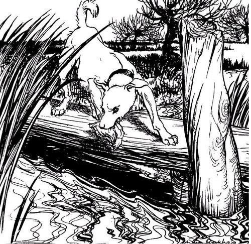
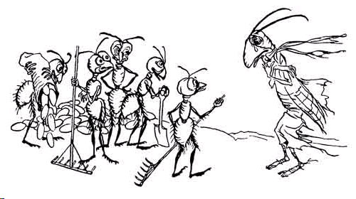
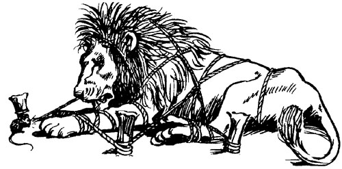
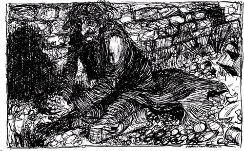
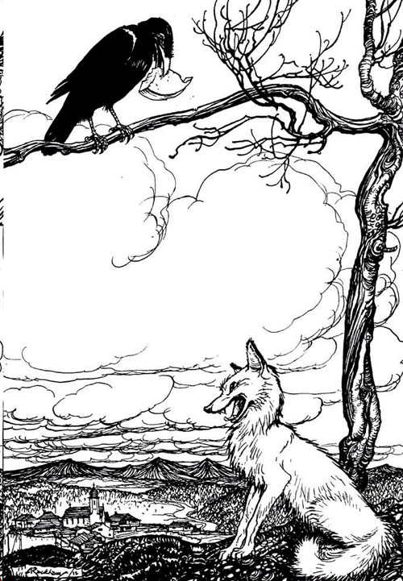
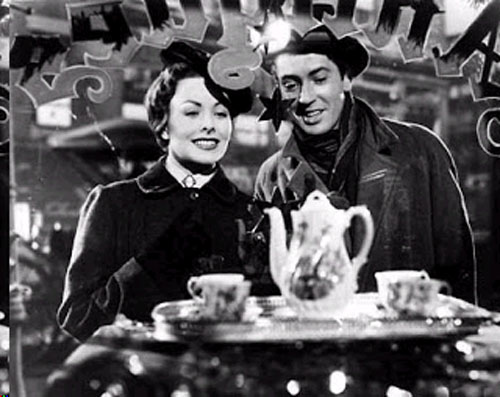
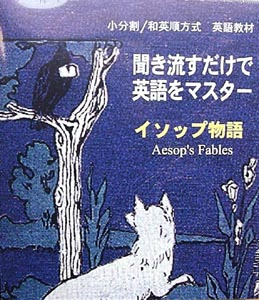

🏠
日
月
縦書き／横書き
| 聞き流すだけで英語をマスター イソップ物語【音声付】初級～中級用 |
| 小分割/和英順方式普及会 |
| Kisosha (2013) |
|
関連商品：辞書なしで英語がスラスラ読める イソップ物語
（小分割/和英順方式英語教材）
聞き流すだけで
英語をマスター
イソップ物語
Aesop's Fables
English translation by
George Fyler Townsend and John Cobb
Japanese translation by Arimasa Kubo
(英語力 初級～中級用）
訳・編 小分割/和英順方式普及会
発行 季想社
日本語→英語の順、
細かい区切りで学ぶ英語教材
●[日本語→英語］ 英語→日本語の順の従来型学習は、日本語が頭に残るだけで、英語が頭に残りませんでした。本教材は日本語→英語の順なので、英語がよく頭に残ります。また日本語が先に来るので、辞書なしでもすいすい進んで行けます。
●［細かい区切り］ 少しずつ区切りながら進んでいきますから、スラスラ頭に入ります。
●［英語の語順のまま］ 英語の語順のまま頭に入ってきますから、英語感覚がすぐ身につきます。関係代名詞も、後ろから訳したりしません。文頭から訳していく同時通訳方式です。
●[音声付] 手軽にインターネットを通じて音声を聴くことができます。また音声ファイルをパソコン、タブレット、スマホ、ミュージックプレーヤー等に一括保存し、インターネットを介さずに聴くことも可能です。英語部分はアメリカ人が、日本語部分は日本人が発音しています。
●［右脳→左脳の連携学習］ 言語中枢は左脳にあり、左脳には右耳がつながっています。右脳はイメージ脳で、左耳がつながっています。この大脳生理学を応用。左耳からまず日本語が聞こえてイメージをつかみ（右脳）、つぎに右耳から英語が聞こえて言語中枢（左脳）に働きかけるので、英語が楽に身につきます。英語のみの原文もついています。
音声の再生について
■
本書末尾に示した音声一括ダウンロードをすると、音声ファイル（.mp3）をミュージック・プレーヤー、スマホ、タブレット、パソコン等に取り込んだり、全話の連続再生ができます（ダウンロードをすると、インターネット接続中でなくても再生ができます）。
■本文中の
【音声再生】リンクをクリックしても、各章ごとの再生ができます（これはインターネット接続が必要です）。
（Kindle Paperwhiteのかた）
オーディオを内蔵していませんので、パソコン等で
音声一括ダウンロードをし、ミュージックプレーヤーやスマホ等にコピーすると、音声を持ち運べます。
◎辞書なしでも大体の意味はわかるようになっていますが、英単語の正確な意味や発音を知りたい場合は、Kindleの場合ですと、単語上を長タッチすると表示されます。
犬と影
The Dog and the Shadow
犬が A DOG, 小川にかかる橋を渡っていました crossing a bridge over astream 肉片を口にくわえてですが with a piece of flesh in his mouth, 水に映った自分の影をみて saw his own shadow in the water それを他の犬の姿と思いました andtook it forthat of another Dog, 自分の２倍の大きさの肉をくわえているように見えたのです with a piece of meat double his own in size.
犬はすぐさま He immediately 自分の肉をほおり出しlet go of his own, もう一匹の犬に向かって猛攻撃しました andfiercely attacked the other Dog その大きな肉片を得るために to get his larger piece from him. こうして犬は両方とも失なってしまったのです Hethus lost both: つまり一つは犬が水の中につかもうとしたものthat which he grasped at in the water, それは影でしたし because it was a shadow; そして自分のもです and his own, それは川が流してしまいましたから because the streamswept it away.

The Dog and the Shadow
A DOG, crossing a bridge over a stream with a piece of flesh in his mouth, saw his own shadow in the water and took it for that of another Dog, with a piece of meat double his own in size. He immediately let go of his own, and fiercely attacked the other Dog to get his larger piece from him. He thus lost both: that which he grasped at in the water, because it was a shadow; and his own, because the stream swept it away.

アリとキリギリス
The Ants and the Grasshopper
アリたちは THE ANTS 冬の気持ちのよい日を過ごしていました were spending a fine winter's day 夏の間に集めた穀物を乾かしながら drying grain collected in the summertime.
キリギリスは A Grasshopper, ききんで死にそうでしたがperishing with famine, 通りかかったので passed by 正直に少しの食べ物を乞いました and earnestly begged for a little food.
「こんにちは "Good day, 親切なお隣りさん kind neighbors,"」 とキリギリスは言いました said the grasshopper. 「とてもお腹がすいちゃったんだ "I am very hungry. ねえ、少し食べ物を貸してよ Please lend me some food."」
アリたちは彼に尋ねました The Ants asked him, 「なぜ君は食べ物を蓄えなかったんだい "Why did you not store food 夏の間に during the summer?'」
キリギリスは答えました He replied, 「とても忙しかったんだ "I was very busy. 歌っていたから I was singing 毎日ね every day."」
「歌ってた！ "Singing!"」 とアリたちが叫びました cried the ants. 彼らは嘲笑して言いました And they said inderision. 「結構なことだ "Very well. 今はダンスをすることだね Now dance. もし君が本当にバカで "If you were foolish enough 夏中歌っていたほどなら to sing all the summer, ダンスをすることだ you must dance 夕食ぬきでベッドに入るまで supperless to bed 冬はね in the winter."」
備えておくのがベストですね It is best to prepare 必要の日のために for the days of necessity.
The Ants and the Grasshopper
THE ANTS were spending a fine winter's day drying grain collected in the summertime. A Grasshopper, perishing with famine, passed by and earnestly begged for a little food. "Good day, kind neighbors," said the grasshopper. "I am very hungry. Please lend me some food." The Ants asked him, ;"Why did you not store food during the summer?" He replied, "I was very busy. I was singing every day." "Singing!" cried the ants. And they said in derision. "Very well. Now dance. If you were foolish enough to sing all the summer, you must dance supperless to bed in the winter." ;It is best to prepare for the days of necessity.

ウサギとカメ
The Hare and the Tortoise
野ウサギ（rabbitより大きい）が A HARE ある日バカにしました one day ridiculed カメの短い足とのろまなことを the short feet and slow pace of theTortoise, カメは笑って答えました who replied, laughing: 「君は風のように素早いけどね "Though you beswift as the wind, 僕のほうが勝つだろうよ I willbeat you レースでは in a race."」
ウサギは The Hare, カメの主張は不可能と単純に思い believing herassertion to be simply impossible, その提案に賛同しましたassented to the proposal; そして彼らは同意しました and they agreed キツネがコースを選び that the Fox should choose the course ゴールを定めると andfix the goal.
レースに決められた日 On the day appointed for the race 両者は共にスタートしました the two started together. カメは一瞬たりとも止まることなく The Tortoise neverfor a moment stopped, 進み続けました but went on ゆっくり、でも着実なペースで with a slow butsteady pace まっすぐコースの終点に至るまでstraight to the end of the course.
ウサギは The Hare, 道ばたで横になり lying down by the wayside, すっかり眠りに落ちてしまっていました fell fast asleep. ようやく目覚め At last waking up, できる限り速く追いかけたのですが and moving as fast as he could, 彼は目にしたのです he saw カメがゴールに着いていたのを the Tortoise had reached the goal, そして疲労のあとの心地よいうたた寝に入っていたのを and was comfortablydozing after herfatigue.
ゆっくりでも着実な者がレースに勝つのです Slow but steady wins the race.
The Hare and the Tortoise
A HARE one day ridiculed the short feet and slow pace of the Tortoise, who replied, laughing: "Though you be swift as the wind, I will beat you in a race." The Hare, believing her assertion to be simply impossible, assented to the proposal; and they agreed that the Fox should choose the course and fix the goal. On the day appointed for the race the two started together. The Tortoise never for a moment stopped, but went on with a slow but steady pace straight to the end of the course. The Hare, lying down by the wayside, fell fast asleep. At last waking up, and moving as fast as he could, he saw the Tortoise had reached the goal, and was comfortably dozing after her fatigue. Slow but steady wins the race.

ライオンとネズミ
The Lion and the Mouse
ライオンが A LION 眠りから起こされてしまいました was awakened from sleep ネズミが彼の顔をかけまわったからです by a Mouse running over his face.
ライオンは怒って起きあがり Rising up angrily, ネズミをつかまえて he caught him 殺そうとしました and wasabout to kill him, そのときネズミは惨めにも嘆願して when the Mousepiteously entreated, 言いました saying: 「私のいのちをお助け下さるなら "If you would onlyspare my life, 必ずやあなたに恩返し致します I would besure torepay your kindness."」
ライオンは笑い The Lion laughed ネズミを逃がしてやりました and let him go. それからほどなくして起こったことは It happened shortly after this ライオンがハンターたちに捕まってしまったことでした that the Lion was caught by some hunters, 彼らはライオンを縛りつけたのです whobound him 丈夫なロープで地面に by strong ropes to the ground.
ネズミは The Mouse, ライオンの遠吠えを聞きつけてrecognizing hisroar, 来てロープをかじりました came gnawed the rope 歯で with his teeth, そして逃がしてやって andset him free, 大声で言ったのです exclaiming:
「あなたはバカにしましたね "You ridiculed 私だってあなたを助けられるという考えを the idea of myever being able to help you, 私から受けることを期待しながら expecting to receive from me 何かの恩返しを any repayment of your favor; 今わかったでしょう now you know できるんですよ that it is possible ネズミにだって for even a Mouse ライオンの益になることを学ぶことは toconbenefits on a Lion."」
The Lion and the Mouse
A LION was awakened from sleep by a Mouse running over his face. Rising up angrily, he caught him and was about to kill him, when the Mouse piteously entreated, saying: "If you would only spare my life, I would be sure to repay your kindness." The Lion laughed and let him go. It happened shortly after this that the Lion was caught by some hunters, who bound him by strong ropes to the ground. The Mouse, recognizing his roar, came gnawed the rope with his teeth, and set him free, exclaiming:
"You ridiculed the idea of my ever being able to help you, expecting to receive from me any repayment of your favor; now you know that it is possible for even a Mouse to con benefits on a Lion."
炭屋と洗濯屋
The Charcoal-Burner and the Fuller
炭焼き職人が A CHARCOAL-BURNER 商売を続けていましたcarried on his trade 自分の家で in his own house.
ある日 One day 彼は友人に会いました he met a friend, 洗濯屋（毛織物の縮充工、洗い張り屋）です a Fuller, そして頼み込みました andentreated him 来て一緒に住んでくれと to come and live with him, もっといい隣人になるべきだと言って saying that they should be far better neighbors また家計も助かるからと and that their housekeepingexpenses would belessened.
洗濯屋は答えました The Fuller replied, 「そういうのは無理だね "The arrangement is impossible 僕に限っては as far as I am concerned, なぜなら僕が何でも白くするとforwhatever I should whiten, 君はすぐまたそれを炭で黒くしちゃうんだから you would immediately blacken again with your charcoal."」
類は類を呼ぶべきですね Like will draw like.
The Charcoal-Burner and the Fuller
A CHARCOAL-BURNER carried on his trade in his own house. One day he met a friend, a Fuller, and entreated him to come and live with him, saying that they should be far better neighbors and that their housekeeping expenses would be lessened. The Fuller replied, "The arrangement is impossible as far as I am concerned, for whatever I should whiten, you would immediately blacken again with your charcoal." Like will draw like.
父親と息子たち
The Father and His Sons
父親に息子たちがいました A FATHER had a family of sons 息子たちは絶えず who wereperpetually 互いに喧嘩をしていました quarreling among themselves.
父はあるとき失敗しました When he failed 彼らのもめごとをしずめることに toheal theirdisputes 訓戒によってです by his exhortations, そのとき父は決心しました he determined 彼らに与えようと to give them 実際的な教訓を a practical illustration 内輪もめの害に関するものです of the evils ofdisunion; そしてこのために and for this purpose 彼はある日息子たちに言ったのです he one day told them 棒の束を持ってきなさいと to bring him a bundle of sticks.
息子たちがそうすると When they had done so, 父はその束を置きました he placed thefaggot 息子たち各自の手に into the hands of each of them 一人また一人とin succession, そして命じました and ordered them それを折るようにと to break it inpieces.
息子たちは力一杯やってみましたが They tried with all their strength, できませんでした and were not able to do it.
父は次に束をほどき He next opened the faggot, 棒を別々に取り took the sticks separately, 各自一つずつ one by one, 再び and again 息子たちの手に置きました put them into his sons' hands, その手で彼らは棒をたやすく折りました upon which they broke them easily.
すると父は語って聞かせました He thenaddressed them このような言葉で in these words: 「息子たちよ "My sons, 一つ心になっていれば if you areof one mind, そして団結するなら and unite 互いに助け合うために to assist each other, 君たちはこの束のようだ you will be as this faggot, 敵のどんな企てにもやられないuninjured by all theattempts of your enemies; だが互いの仲が裂かれているなら but if you aredivided among yourselves, 折られてしまうだろう you will be broken これらの棒のようにたやすく as easily as these sticks." 」
The Father and His Sons
A FATHER had a family of sons who were perpetually quarreling among themselves. When he failed to heal their disputes by his exhortations, he determined to give them a practical illustration of the evils of disunion; and for this purpose he one day told them to bring him a bundle of sticks. When they had done so, he placed the faggot into the hands of each of them in succession, and ordered them to break it in pieces. They tried with all their strength, and were not able to do it. He next opened the faggot, took the sticks separately, one by one, and again put them into his sons' hands, upon which they broke them easily. He then addressed them in these words: "My sons, if you are of one mind, and unite to assist each other, you will be as this faggot, uninjured by all the attempts of your enemies; but if you are divided among yourselves, you will be broken as easily as these sticks."
ヘラクレスと運送屋
Hercules and the Wagoner
ある運送屋が A CARTER 荷車（牛車）を走らせていました was driving a wagon 田舎の細道を along a country lane, そのとき車輪が沈み込んでしまいました when the wheels sank down わだち（車輪跡）の中に深く deep into a rut.
田舎者の運転手は Therustic driver, びっくりし stupefied 仰天して andaghast, 荷車を見ながら立ちつくしていました stood looking at the wagon, 何もせず and did nothing ただ大声で叫ぶだけでした bututter loud cries ヘラクレス（ギリシャ伝説の怪力男）に向かって toHercules 来て助けて下さいと to come and help him.
ヘラクレスは Hercules, 現われて次のように語ったそうです it is said, appeared and thus addressed him: 「車輪の下に君の肩を入れるんだ "Put your shoulders to the wheels,my man. また牛を追い立てよGoad on your bullocks, これ以上助けを求めて私に祈ってはいけないよ and never more pray to me for help, 自助努力をしっかりするまでは until you have done your best tohelp yourself, さもないと or depend upon it 君は今後無駄な祈りをすることになる you willhenceforth prayin vain."」
自助は最善の助けです Self-help is the best help.
Hercules and the Wagoner
A CARTER was driving a wagon along a country lane, when the wheels sank down deep into a rut. The rustic driver, stupefied and aghast, stood looking at the wagon, and did nothing but utterloud cries to Hercules to come and help him. Hercules, it is said, appeared and thus addressed him: "Put your shoulders to the wheels, my man. Goad on your bullocks, and never more pray to me for help, until you have done your best to help yourself, or depend upon it you will henceforth pray in vain." Self-help is the best help.
旅行者と犬
The Traveler and His Dog
旅行者が A TRAVELER 旅に出かけようとするときabout to set out on a journey 彼の犬を見ると saw his Dog ドアの所に立って伸びをしていました stand at the door stretching himself.
彼はきつく犬に言いました He asked him sharply: 「なぜそんなところに立ってあくびをしてるんだ "Why do you stand theregaping? みんな用意できてるのに Everything is ready お前以外はbut you, だからすぐ俺についてくるんだ so come with meinstantly."」
犬は The Dog, しっぽを振りながら wagging his tail, 答えました replied: 「ああご主人様 "O, master! 私はとっくに準備できているんですよ I am quite ready; あなたを it is you 私は待っていたんです for whom I am waiting."」
ぶらぶらしている者は The loiterer しばしば遅れを責めるものですね often blames delay 活動的な友のせいにして on his more active friend.
The Traveler and His Dog
A TRAVELER about to set out on a journey saw his Dog stand at the door stretching himself. He asked him sharply: "Why do you stand there gaping? Everything is ready but you, so come with me instantly." The Dog, wagging his tail, replied: "O, master! I am quite ready; it is you for whom I am waiting." The loiterer often blames delay on his more active friend.

守銭奴
The Miser
守銭奴が AMISER 持ち物を全部売り払い sold all that he had 金塊を購入しました and bought alump of gold, 彼はそれを地中の穴に埋めました which he buried in a hole in the ground 古い塀のそばですが by the side of an old wall 毎日見に行っていました and went to look at daily.
使用人の一人は One of his workmen その場所に彼が頻繁に行くのを見てobserved hisfrequent visits to the spot 探りを入れることに決めました and decided to watch his movements.
使用人はまもなく発見しました He soon discovered 隠された宝の秘密を the secret of the hidden treasure, そしてそこを掘り and digging down, 金塊を見つけて came to the lump of gold, 盗み出したのです andstole it.
守銭奴は The Miser, 次にそこへ行ったとき on his next visit, 穴が空なのを見い出しました found the hole empty そして髪をかきむしり始め and began totear his hair 大きな嘆き声をあげました and to make loudlamentations.
ある隣人が A neighbor, 悲嘆にくれる彼を見 seeing himovercome with grief またその理由を知って and learning thecause, 言いました said, 「どうぞそんなに悲しまないで "Please do not grieve so; それより行って石を取り but go and take a stone, 石を穴に入れておくことですよ and place it in the hole, そして夢想することです and fancy 金が今もそこにあると that the gold is still lying there. あなたにとっては同じことでしょ It willdo you quite the same service; なぜなら金がそこにあったときfor when the gold was there, それはあなたに何もしてくれませんでした you had it not, あなたはそれを全く使わなかったんですからas you did not make theslightest use of it."」
The Miser
A MISER sold all that he had and bought a lump of gold, which he buried in a hole in the ground by the side of an old wall and went to look at daily. One of his workmen observed his frequent visits to the spot and decided to watch his movements. He soon discovered the secret of the hidden treasure, and digging down, came to the lump of gold, and stole it. The Miser, on his next visit, found the hole empty and began to tear his hair and to make loud lamentations. A neighbor, seeing him overcome with grief and learning the cause, said, "Please do not grieve so; but go and take a stone, and place it in the hole, and fancy that the gold is still lying there. It will do you quite the same service; for when the gold was there, you had it not, as you did not make the slightest use of it."
天文学者
The Astronomer
天文学者が AN ASTRONOMER よく出かけていましたused to go out 夜 at night 星を観察していたのです to observe the stars. ある夜 One evening, 郊外を歩き回っていたとき as he wandered through the suburbs 彼の注意が全く空に向けられていたので with his whole attentionfixed on the sky, 落ちてしまいました he fell 思いがけずaccidentally 深い井戸に into a deep well.
彼が悔やんでいると While he lamented また嘆いていると and bewailed すり傷と打ち傷をです his sores and bruises, また助けを大声で求めていると and cried loudly for help, 隣人が井戸にかけ寄ってきました a neighbor ran to the well, そして起きたことを知って and learning what had happened 言ったのです said: 「よく聞きなさいよ "Hark ye, オジさん old fellow, なぜ why, 天国のことを詮索するのに懸命になりながら instriving topry into what is in heaven, 地上のことにかまわないの do you notmanage to see what is on earth?'」
The Astronomer
AN ASTRONOMER used to go out at night to observe the stars. One evening, as he wandered through the suburbs with his whole attention fixed on the sky, he fell accidentally into a deep well. While he lamented and bewailed his sores and bruises, and cried loudly for help, a neighbor ran to the well, and learning what had happened said: "Hark ye, old fellow, why, in striving to pry into what is in heaven, do you not manage to see what is on earth?'
羊飼いの少年とオオカミ
The Shepherd's Boy and the Wolf
羊飼いの少年が A SHEPHERD-BOY, 村の近くで羊の群れを見張っていましたが who watched a flock of sheep near a village, 村民たちを３、４度呼び出しました brought out the villagers three or four times 「狼だ、狼だ！」と叫んで by crying out, "Wolf! Wolf!" そして隣人たちがそこに来ると and when his neighbors came to help him, 彼らの慌てふためきを見て笑ったのです laughed at them for theirpains.
でもオオカミは The Wolf, however, まさに最後にやって来ました didtruly come at last. 羊飼いの少年は The Shepherd-boy, 今こそ本気で警告を発しました now really alarmed, 叫んだのです shouted 恐怖にもだえて in anagony ofterror: 「どうか来て助けて "Please, come and help me; オオカミが羊を殺しています the Wolf is killing the sheep"」と; でも誰もその叫びには注意を払いませんでした but no one paid anyheed to his cries, また誰も助けを出しませんでした norrendered any assistance.
オオカミは The Wolf, 何に妨害されることもなく having nocause of fear, 余裕をもって at hisleisure 羊を引き裂き lacerated 群れ全体を破滅させました or destroyed the whole flock.
ウソつきを信じる者はいませんね There isno believing a liar, たとえ彼が真実を語っているときも even when he speaks the truth.
The Shepherd's Boy and the Wolf
A SHEPHERD-BOY, who watched a flock of sheep near a village, brought out the villagers three or four times by crying out, "Wolf! Wolf!" and when his neighbors came to help him, laughed at them for their pains. The Wolf, however, did truly come at last. The Shepherd-boy, now really alarmed, shouted in an agony of terror: "Please, come and help me; the Wolf is killing the sheep"; but no one paid any heed to his cries, nor rendered any assistance. The Wolf, having no cause of fear, at his leisure lacerated or destroyed the whole flock. There is no believing a liar, even when he speaks the truth.
ロバとその影
The Ass and His Shadow
旅行者がロバを借りました A TRAVELERhired an Ass 遠くの地に運んでもらうために toconvey him to a distant place. ひどく暑い日で The day beingintensely hot, 太陽はこれでもかと照りつけてきました and the sun shining in itsstrength, 旅行者は止まって休み the Traveler stopped to rest, 暑さをしのぐ避難所を探しました andsought shelter from theheat ロバの影に under the Shadow of the Ass.
それは一人を守る余裕しかなくAs thisafforded only protection for one, また旅行者もロバの持ち主も共にその影に入りたがったので and as the Traveler and the owner of the Ass both claimed it, 両者に激しい言い争いが起こりました a violentdisputearose between them どちらに影に入る権利があるかとas to which of them had the right to the Shadow.
持ち主は言い続けました The ownermaintained 自分はロバを貸しただけだ that he had let the Ass only, 影までは貸していないと and not his Shadow.
旅行者は主張しました The Travelerasserted 自分はロバを借りたと共に that he had, with the hire of the Ass, 影も借りたのだと hired his Shadow also.
そのケンカは The quarrel 言葉から殴り合いへと進みproceeded from words to blows, 二人がケンカしている間に and while the menfought, ロバは疾走していってしまいました the Ass galloped off.
影についてケンカしている間に In quarreling about the shadow 私たちはしばしば実体を見失ってしまうものです we often lose the substance.
The Ass and His Shadow
A TRAVELER hired an Ass to convey him to a distant place. The day being intensely hot, and the sun shining in its strength, the Traveler stopped to rest, and sought shelter from the heat under the Shadow of the Ass. As this afforded only protection for one, and as the Traveler and the owner of the Ass both claimed it, a violent dispute arose between them as to which of them had the right to the Shadow. The owner maintained that he had let the Ass only, and not his Shadow. The Traveler asserted that he had, with the hire of the Ass, hired his Shadow also. The quarrel proceeded from words to blows, and while the men fought, the Ass galloped off. In quarreling about the shadow we often lose the substance.
北風と太陽
The North Wind and the Sun
北風と太陽が THE NORTH WIND and the Sun 論争しました disputed どちらが最強の者かと as to which was the most powerful, そして同意しました and agreed 勝者と宣言される者は that he should be declared the victor 歩いて旅する男の服を最初に剥ぎ取った者だと who could firststrip awayfaring man of his clothes.
北風がまず自分の力を試して The North Wind first tried his power 精一杯吹きました and blew with all hismight, でも突風が強烈になればなるほど but thekeener his blasts, 旅人はますます服を肌身に押さえたのです the closer the Travelerwrapped his cloak around him, それで結局 until at last, 勝利の希望をすべて放棄して resigning all hope of victory, 風は太陽を呼び出しました the Wind called upon the Sun 何ができるかを見るためです to see what he could do.
太陽は突然 The Sun suddenly 全力で暖かい日差しを送りましたshone out with all his warmth. 旅人は The Traveler 温暖な光線を感じるやいなやno sooner felt his genial rays 着物を一つまた一つと脱いでいきました than he took offone garment after another, ついには and at last, 暑さに全くまいってしまって fairlyovercome with heat, 服を脱ぎ undressed 道ばたの小川で水浴したのでした and bathed in a stream that lay in his path.
説得は力づくより良いのです Persuasion is better than Force.
The North Wind and the Sun
THE NORTH WIND and the Sun disputed as to which was the most powerful, and agreed that he should be declared the victor who could first strip a wayfaring man of his clothes. The North Wind first tried his power and blew with all his might, but the keener his blasts, the closer the Traveler wrapped his cloak around him, until at last, resigning all hope of victory, the Wind called upon the Sun to see what he could do. The Sun suddenly shone out with all his warmth. The Traveler no sooner felt his genial rays than he took off one garment after another, and at last, fairly overcome with heat, undressed and bathed in a stream that lay in his path. Persuasion is better than Force.
樫の木と葦
The Oak and the Reeds
非常に大きな樫の木が A VERY LARGE OAK TREE 昔立っていました wasonce standing 川の土手に on the bank of a river. しかしある日 But one day, 風で根こぎにされ it wasuprooted by the wind 川に流されてしまいました and thrown across a stream.
それは葦の茂みに来たのですが It fell among some Reeds, こんなことを葦に言いました which it thus addressed: 「一体どうして君たちは "I wonder how you, そんなに軽くて弱いのに who are so light and weak, この強い風の中でも完全にやられてしまうことがないのだ are notentirely crushed by these strong winds."」
葦たちは答えました They replied, 「あなたは戦うでしょ "You fight 風と争って and contend with the wind, その結果 and consequently やられてしまうんです you are destroyed; 一方私たちは while we 逆に on the contrary ほんのそよ風にも頭を垂れますbend before theleastbreath of air, それゆえに and therefore 折れずにremain unbroken, のがれるんですよ and escape."」
克服するために身をかがめるんですStoop to conquer.
The Oak and the Reeds
A VERY LARGE OAK TREE was once standing on the bank of a river. But one day, it was uprooted by the wind and thrown across a stream. It fell among some Reeds, which it thus addressed: "I wonder how you, who are so light and weak, are not entirely crushed by these strong winds." They replied, "You fight and contend with the wind, and consequently you are destroyed; while we on the contrary bend before the least breath of air, and therefore remain unbroken, and escape." Stoop to conquer.
ラクダ
The Camel
人は初めてラクダを見たとき WHEN MAN first saw the Camel, その巨体にひどく驚き he was so frightened at hisvast size 逃げ出しました that he ran away.
しばらくして After a time, この動物の気性のおとなしさと優しさに気づくとperceiving themeekness and gentleness of the beast's temper, 人は勇気をふるい起こして hesummoned courage ラクダに近づきましたenough to approach him. またその後まもなく Soon afterwards, この動物が全くの低能であるのを見てとると observing that he was an animal altogetherdeficient in spirit, 人は大胆にも heassumed such boldness ラクダの口にクツワをはめました as to put a bridle in his mouth, そして子どもにラクダを引かせたのです and to let a childdrive him.
使うことが役に立ちますね Use serves 恐怖の克服に toovercomedread.
The Camel
WHEN MAN first saw the Camel, he was so frightened at his vast size that he ran away. After a time, perceiving the meekness and gentleness of the beast's temper, he summoned courage enough to approach him. Soon afterwards, observing that he was an animal altogether deficient in spirit, he assumed such boldness as to put a bridle in his mouth, and to let a child drive him. Use serves to overcome dread.
予言者
The Prophet
魔術師が A WIZARD, 市場にすわって sitting in the marketplace, 道行く人々の運勢を告げていました was telling the fortunes of the passers-by そのときある人が駆け込んできましたwhen a person ran up ひどく急いで in greathaste, そして彼に知らせたのです and announced to him 彼の家の扉が that the doors of his house こわされて開いていると had been broken open また中のものもみな and that all hisgoods 盗まれてしまったと were being stolen.
魔術師は深いため息をつき He sighed heavily 急いで立ち去りました and hastened away できる限り早く走って as fast as he could run. 隣人は彼が走り去るのを見て A neighbor saw him running 言ったのです and said, 「おーい、あんた "Oh! you fellow there! あんたは言ってるじゃないか you say 人の運勢を言い当てられると you canforetell thefortunes of others; なのにどうして how is it 自分のを言い当てなかったんだ you did notforesee your own?'」
The Prophet
A WIZARD, sitting in the marketplace, was telling the fortunes of the passers-by when a person ran up in great haste, and announced to him that the doors of his house had been broken open and that all his goods were being stolen. He sighed heavily and hastened away as fast as he could run. A neighbor saw him running and said, "Oh! you fellow there! you say you can foretell the fortunes of others; how is it you did not foresee your own?'
ウサギとライオン
The Hares and the Lions
ウサギたちが THE HARES 集会で熱弁をふるってharangued the assembly, 皆が平等であるべきだと議論していました and argued that all should be equal. ライオンたちはこう返答しました The Lions made this reply: 「君たちの言葉は "Your words, おい、ウサギたちよ O Hares! いいけどね are good; 欠けているんだよ but they lack 我々のような爪と牙が both claws and teeth such as we have."」
The Hares and the Lions
THE HARES harangued the assembly, and argued that all should be equal. The Lions made this reply: "Your words, O Hares! are good; but they lack both claws and teeth such as we have."
兄と妹
The Brother and the Sister
ある父親に一人の息子がいました A FATHER had one son また一人の娘が and one daughter, 前者はたいへんな美男子で the former remarkable for his good looks, 後者はめったにないくらい醜い女の子でした the latter for her extraordinary ugliness.
二人がある日遊んでいると While they were playing one day as children, たまたま偶然にも they happenedby chance 一緒になって鏡をのぞきこんだのです to look together into a mirror 母の椅子の上に置いてあったものでした that was placed on their mother's chair.
息子は自分の美しさをほめそやし The boycongratulated himself on his good looks; 娘には怒りがこみあげてきました the girlgrew angry, また兄のうぬぼれに耐えきれず and could not bear theself-praises of her Brother, 兄の言うことすべてを解釈しました interpreting all he said 彼女をバカにした言葉に intoreflection on herself.
彼女は父のもとへ走りました She ran off to her father, 兄のことで仇を討ってもらうために to beavenged on her Brother, また意地悪く兄を非難しました and spitefullyaccused him 男のくせに利用したと of having, as a boy,made use of that 女の子だけに属するもの（美しさ）を which belonged only to girls.
父は二人とも抱きしめました The father embraced them both, キスと愛情を与えながら andbestowing his kisses andaffection どちらにも偏らずに impartially on each, そして言いました said, 「私は願うよ "I wish お前たちが二人とも鏡を見ることを you both would look into the mirror 毎日だ every day: 息子よ you, my son, お前の美しさを損ねちゃいけないよ that you may not spoil your beauty 悪い行ないで by evilconduct; また娘よ and you, my daughter, お前は自分の美しさの不足分を補いなさい that you maymake up for your lack of beauty お前の美徳をもって by your virtues."」
The Brother and the Sister
A FATHER had one son and one daughter, the former remarkable for his good looks, the latter for her extraordinary ugliness. While they were playing one day as children, they happened by chance to look together into a mirror that was placed on their mother's chair. The boy congratulated himself on his good looks; the girl grew angry, and could not bear the self-praises of her Brother, interpreting all he said into reflection on herself. She ran off to her father, to be avenged on her Brother, and spitefully accused him of having, as a boy, made use of that which belonged only to girls. The father embraced them both, and bestowing his kisses and affection impartially on each, said, "I wish you both would look into the mirror every day: you, my son, that you may not spoil your beauty by evil conduct; and you, my daughter, that you may make up for your lack of beauty by your virtues."
ロバと買い手
The Ass and His Purchaser
ある男がロバを購入したいと願いました A MAN wished topurchase an Ass, そして所有者と話をつけました and agreed with its owner そのロバをテストすることを that he should try out the animal 買う前に before he bought him.
彼はロバを家に連れていきました He took the Ass home そしてロバを入れました and put him 麦のおかれた囲いの中に in the straw-yard 彼の他のロバたちと一緒に with his other Asses, すると新入りのロバは upon which the new animal 他のロバたちには目もくれず left all the others すぐさま and at once 一匹のロバと仲良くなりました joined the one 最も怠け者で that was most idle 一番の大食いのロバです and the greatest eater of them all.
これを見ると Seeing this, 男はそのロバに端綱をつけ the man put a halter on him 所有者のもとに連れ帰りました and led him back to his owner. 「どうやって？」と聞かれ On being asked how, こんな短い時間に in so short a time, テストできるとはと言われて he could have made atrial of him, 彼は答えました he answered, 「テストなんて必要ありませんよ "I do not need a trial; 私は知っているんです I know こいつは同じです that he will be just the same こいつが友に選んだ者とね as the one he chose for hiscompanion."」
The Ass and His Purchaser
A MAN wished to purchase an Ass, and agreed with its owner that he should try out the animal before he bought him. He took the Ass home and put him in the straw-yard with his other Asses, upon which the new animal left all the others and at once joined the one that was most idle and the greatest eater of them all. Seeing this, the man put a halter on him and led him back to his owner. On being asked how, in so short a time, he could have made a trial of him, he answered, "I do not need a trial; I know that he will be just the same as the one he chose for his companion."

キツネとカラス
The Fox and the Crow
カラスが A CROW 少しの肉を盗み having stolen a bit of meat, 木にとまって perched in a tree それをくちばしにくわえていました andheld it in her beak.
キツネがこれを見て A Fox, seeing this, 肉を自分のものにしたいと思いましたlonged topossess the meat himself, そしてずるい策略で and by a wily stratagem 成功しました succeeded.
「なんて素敵なカラスさんでしょう "How handsome is the Crow,"」とキツネは叫んだのです he exclaimed, 「その容姿の美しさに "in the beauty of her shape またそのお顔立ちの良さ and in the fairness of hercomplexion! ああ Oh, もしそのお声も美しければ if her voice were only equal to her beauty, 当然、鳥の女王と言われたでしょうに she woulddeservedly beconsidered the Queen of Birds!"」
そうキツネはだまして言いました This he said deceitfully; でもカラスは but the Crow, 反証したいと思いました anxious torefute 自分の声に関して投げかけられた疑問に対し thereflectioncast upon her voice, それで大きく「カー」と鳴いて set up a loud caw 肉を落としました and dropped the flesh.
キツネはすぐさまそれを拾いあげ The Fox quickly picked it up, カラスにこう言いました and thusaddressed the Crow: 「カラスさんよ "My good Crow, 声は結構いいけど your voice is right enough, オツムが弱いようだね but your wit iswanting."」
おべっか使いを信用しないことですね Do not trustflatterers.
The Fox and the Crow
A CROW having stolen a bit of meat, perched in a tree and held it in her beak. A Fox, seeing this, longed to possess the meat himself, and by a wily stratagem succeeded. "How handsome is the Crow," he exclaimed, in the beauty of her shape and in the fairness of her complexion! Oh, if her voice were only equal to her beauty, she would deservedly be considered the Queen of Birds!" This he said deceitfully; but the Crow, anxious to refute the reflection cast upon her voice, set up a loud caw and dropped the flesh. The Fox quickly picked it up, and thus addressed the Crow: "My good Crow, your voice is right enough, but your wit is wanting." Do not trust flatterers.
終わり
Illustrations by Arthur Rackham (1912)
特別プレゼント！
（日常英会話＋ユーモア編、ロミオとジュリエット、ピーターラビット、イソップ物語）
当教材をネイティブ講師が当教材をマンツーマンで教えてくれます
（Skype式英会話授業が３回無料!!!）
◎提携先の「大人の英会話倶楽部」を利用したサービスです。
◎インターネットの無料テレビ電話Skypeを利用して,上質な英会話授業が３回無料で受けられます（１回25分）。
◎パソコンに無料アプリSkypeをインストールし、Webカメラ、マイク付ヘッドホンをつければご利用になれます。
◎おもにフィリピンのプロの英会話講師（「大人の英会話倶楽部」）が、「日常英会話＋ユーモア編」から優しく教えてくれます。
◎お好きな時間に授業を予約してのご利用となります。
◎英会話授業は３回でやめても結構ですし、４回目以降の授業も受けたいかたも、有料（１レッスンわずか125円～）でお続けになれます。
（付録）
最後に Lastly, ご紹介したいと思います I would like to introduce 「聞き流すだけで...」シリーズの他の本から少し抜粋して some of the other books of the "Kikinagasu dakede..." series.
【ボスコム谷のミステリー】

以下からの抜粋です。
コナン・ドイル作（シャーロック・ホームズの冒険）より
「ボスコム谷のミステリー」
富豪ターナーと、マッカーシーは、かつて同じくオーストラリアにいたことがある。彼らはイギリスに帰ってから、同じ敷地内に住んでいた。ある日、マッカーシーはボスコム沼の近くで、何者かに鈍器でなぐられ、死亡した。その犯人とされて捕まったのは、マッカーシーの息子ジェームズだった。しかしターナーの娘、またジェームズの恋人でもあるアリスは、ジェームズの無実を堅く信じている。アリスの求めにより、シャーロック・ホームズはボスコム沼へ向かい、事件の調査を開始した。 結末におけるホームズのいきな計らいが、にくい（１～２章より）。
No.１
ホームズからの電報
私たちはすわって We were seated ある朝朝食をとっていた at breakfast one morning, 妻と私（ワトソン）であるが my wife and I, そのとき女中が電報をもって入ってきた when the maid brought in a telegram.
電報はシャーロック・ホームズからのもので It was from Sherlock Holmes こう書いてあった and ran in this way:
「２日ほど暇はあるか Have you a couple of days to spare?
（じつは私は）電報で呼ばれた Have just been wired for 西部イングランドから from the west of England ボスコム谷の惨劇に関してだ in connection with Boscombe Valley tragedy.
私はうれしいのだが Shall be glad もし君が一緒に来てくれたなら if you will come with me.
風光明媚な所だよ Air and scenery perfect. 私はパディングトン駅11時15分の便で発つ LeavePaddington by the 11:15.」
「どうするの、あなた "What do you say, dear?"」
と妻が言った said my wife, 私の顔をのぞきこむようにして looking across at me. 「行くの? "Will you go?" 」
「どうしようかなあ "I really don't know what to say. （患者の予約）リストもずいぶんたまっていることだし I have a fairly long list at present."」
「あら "Oh, アンストルザーさんが Anstruther 代わりにやって下さるわよ would do your work for you.
あなたは近ごろ顔色がさえませんわよ You have been looking a little pale lately. 気分転換するといいわ I think that the change would do you good,
それにあなたはいつも興味を持っていらっしゃるじゃないの and you are always so interested シャーロック・ホームズさんのことには in Mr. Sherlock Holmes's cases." 」
「そりゃあ恩知らずになるだろうね "I should be ungrateful もし僕に興味がなかったら if I were not, 彼の仕事から僕が得たものを思えばね seeing what I gained through one of them," 」
と私は答えた I answered. 「でも行くとすれば "But if I am to go, すぐ支度にかからなきゃ I must pack at once, あと30分しかない for I have only half an hour." 」
アフガニスタンでの私のキャンプ生活の経験は My experience of camp life in Afghanistan 少なくとも役にたった had at least had the effect 私を迅速で用意の出来た旅行者にすることに of making me a prompt and ready traveller.
私の必要品は My wants 少ないし were few 単純だ and simple, それで、私が言ったその30分もしないうちに so that in less than the time stated 私はタクシー馬車の中にいた I was in a cab 手さげカバンを持って with my valise, パディングトン駅へとガタガタゆられていたのである rattling away to Paddington Station.
シャーロック・ホームズは Sherlock Holmes プラットホームでブラブラ行ったり来たりしていた was pacing up and down the platform,
彼の長身で his tall, ひょろ長い姿は gaunt figure 一層ひょろ長く見えた made even gaunter and taller 彼の長い灰色の旅行用外套（マント）によって by his long gray travelling-cloak またピッタリした布製の帽子とによって and close-fitting cloth cap.
●原文
We were seated at breakfast one morning, my wife and I, when the maid brought in a telegram. It was from Sherlock Holmes and ran in this way:
Have you a couple of days to spare? Have just been wired for from the west of England in connection with Boscombe Valley tragedy. Shall be glad if you will come with me. Air and scenery perfect. Leave Paddington by the 11:15.
"What do you say, dear?" said my wife,looking across at me. "Will you go?"
"I really don't know what to say. I have a fairly long list at present."
"Oh, Anstruther would do your work for you. You have been looking a little pale lately. I think that the change would do you good, and you are always so interested in Mr. Sherlock Holmes's cases."
"I should be ungrateful if I were not, seeing what I gained through one of them," I answered. "But if I am to go, I must pack at once, for I have only half an hour."
My experience of camp life in Afghanistan had at least had the effect of making me a prompt and ready traveller. My wants were few and simple, so that in less than the time stated I was in a cab with my valise, rattling away to Paddington Station.
Sherlock Holmes was pacing up and down the platform, his tall, gaunt figure made even gaunter and taller by his long gray travelling-cloak and close-fitting cloth cap. ■
以下からの抜粋です。
オードリー・ヘップバーン、グレゴリー・ペック主演のパラマウント映画（1953年）。
アン王女（オードリー）は、ヨーロッパ親善旅行の中、ローマにやって来た。しかし、あまりの過密スケジュールに嫌気がさし、また普通人の生活への憧れから、こっそり大使館を抜け出て、ローマの街角に出てしまう。そこで、アン王女のことを知らない新聞記者ジョー・ブラッドレー（グレゴリー）に出会う。
ジョーはしばらくしてのち、彼女はアン王女と知り、特ダネを書いて大儲けしようと思うのだが・・・・・・。英会話の典型的表現が多く、昔から「英会話学習に最適」と言われてきた作品。英会話を志したい人には最適です。
以下は、アン王女とジョーの会話（14章より。知り合い始めの頃）。
ジョー JOE: ここにいたんだね There you are!
アン ANN: 外の人々を見ていたの I was looking (→lookin'と発音) at all the people out here. こんな所で暮らせたら楽しいでしょうね It must be fun to live in a (→liv'ina) place like this.
ジョー JOE: ああ、それは言えてる Yeah, it has its moments. それぞれのアパートについて簡単に解説してあげてもいいよ I can give you a running commentary on each apartment.
アン ANN: 私、行かなきゃ I must go.
ジョー JOE: えーっ Hmm?
アン ANN: お別れを言うために待っていたの I only waited to say goodbye.
ジョー JOE: お別れ？ Goodbye? まだ会ったばかりじゃないか But, we've only just met. 朝食でもどう？ How about some breakfast?
アン ANN: ごめんなさい、時間がないの I'm sorry I haven't time.
ジョー JOE: よほど大切なデートなんだね Must be a pretty important date, 食事もしないで出ていくとは to run off without eating.
アン ANN: そうなの It is.
ジョー JOE: では君を送ってあげよう Well, I'll go along with you, どこへでも行きたいところへ wherever you are going.
アン ANN: それはいいの That's all right, ありがとう thank you. 場所は見つけられるわ I can find the place. ベッドを貸して下さってありがとう Thank you for letting me sleep in your bed.
ジョー JOE: ああ、いいんだ Oh, that's all right. 気にしないで Think nothing of it.
アン ANN: 思いやりのあるかたね It was very considerate of you. あの長椅子ではさぞ寝心地が悪かったでしょう You must've been awfully uncomfortable on that couch.
ジョー JOE: 全然、いつでもOKさ No, do it all the time!
アン ANN: さよなら、ブラッドレーさん Goodbye, Mr. Bradley.
ジョー JOE: さようなら Goodbye. そこを抜けて Go right through there, 階段を下りればいい and down all the steps.
アン ANN: ありがとう Thank you.
（忘れ物をして戻ってきたアンに、ジョーが出会う）
ジョー JOE: おや、世間は狭いね Well...small world!
アン ANN: そうね、私、忘れていたんです Yes, I almost forgot. お金を少し貸して下さる？ Can you lend me some money?
ジョー JOE: ああ、そうだな Oh, yeah... 昨夜は一文なしだったね that's right, you didn't have any last night, did you? えーと、幾らいるんだい？ Uh, how much... how much was it that you wanted?
アン ANN: そうねぇ、どのくらい必要かわからないわ Well, I don't know how much I need. いくらお持ち？ How much have (→much've) you got?
ジョー JOE: では、これを半分ずつにするのはどうかな Well, er, suppose we just split this fifty-fifty. 1000リラある Here's a thousand lira.
アン ANN: 1000？ A thousand?! そんなに下さって大丈夫なの？ Can you really spare all that?
ジョー JOE: 約1ドル50セントだよ It's about a (→aboura) dollar and a half.
アン ANN: あら、必ずお返しするよう手配いたします Oh...well, I'll arrange for it to be sent back to you. ご住所は？ What is your address?
ジョー JOE: マルグッタ通り51 Er, Via Margutta 51.
アン ANN: マルグッタ通り51のジョー・ブラッドレーさんね Via Margutta 51. Joe Bradley.
ジョー JOE: そう Yeah.
アン ANN: さようなら Goodbye, ありがとう thank you.
（この光景を見ていた大家のジョバンニの言葉）
ジョバンニ GIOVANNI: おい、金が2倍になるんだろ Ah, double my money, eh? どうやって増やすのか聞かせてよ You tell me why (脚本ではhowだが間違って発音) I double my money... あの方法かい that way?
ジョー JOE: 明日だ Tomorrow.
ジョバンニ GIOVANNI: 明日ねえ Eh, tomorrow.
■英語原文
JOE: There you are!
ANN: I was looking at all the people out here. It must be fun to live in a place like this.
JOE: Yeah, it has its moments. I can give you a running commentary on each apartment.
ANN: I must go.
JOE: Hmm?
ANN: I only waited to say goodbye.
JOE: Goodbye? But, we've only just met. How about some breakfast?
ANN: I'm sorry I haven't time.
JOE: Must be a pretty important date, to run off without eating.
ANN: It is.
JOE: Well, I'll go along with you, wherever you are going.
ANN: That's all right, thank you. I can find the place. Thank you for letting me sleep in your bed.
JOE: Oh, that's all right. Think nothing of it.
ANN: It was very considerate of you. You must have been awfully uncomfortable on that couch.
JOE: No, do it all the time!
ANN: Hm. Goodbye, Mr. Bradley.
JOE: Goodbye. Oh. Go right through there, and down all the steps.
ANN: Thank you.
JOE: Well...small world!
ANN: Yes, I almost forgot. Can you lend me some money?
JOE: Oh, yeah...that's right, you didn't have any last night did you? Uh, how much...how much was it that you wanted?
ANN: Well, I don't know how much I need. How much have you got?
JOE: Well, er, suppose we just split this fifty-fifty. Here's a thousand lira.
ANN: A thousand?! Can you really spare all that?
JOE: It's about a dollar and a half.
ANN: Oh...well, I'll arrange for it to be sent back to you. What is your address?
JOE: Er, Via Margutta 51.
ANN: Via Margutta 51. Joe Bradley.
JOE: Yeah.
ANN: Goodbye, thank you.
GIOVANNI: Ah, double my money, eh? You tell me why I double my money...that way?
JOE: Tomorrow, tomorrow, tomorrow.
GIOVANNI: Eh, tomorrow. ■
【賢者の贈物】

O・ヘンリーの傑作短編。安アパートに暮らしながらも深く愛し合っている若い夫婦――ジムとデラの物語。もうすぐクリスマスというときに、二人はクリスマスプレゼントを考え始める。二人とも、貧しい中にも苦心して、最愛の人のために最もふさわしいプレゼントをするのだが.... Ｏ・ヘンリーのペーソスあふれる語り口に、人生のささやかな幸福とは何かを思わせられる。
（１）
１ドルと８７セント One dollar and eighty-seven cents. それで全部だった That was all. しかもそのうち６０セントは And sixty cents of it １セント硬貨だった was in pennies.
１回に１セントか２セントずつ貯めたものだ Pennies saved one and two at a time 雑貨屋で強引にけちって by bulldozing the grocer また八百屋で and the vegetable man そして肉屋で and the butcher 顔を赤らめてまでして until one's cheeks burned けちだという無言の非難をされて with the silent imputation of parsimony そんなしみったれた買い方にである that such close dealing implied.
デラは３度数えた Three times Della counted it. １ドル８７セント One dollar and eighty- seven cents. そして明日はクリスマスだった And the next day would be Christmas.
どうしたって何もすることがなかった There was clearly nothing to do みすぼらしい小さなソファに身を投げ出すよりほかに but flop down on the shabby little couch そしておいおい泣くよりほかに and howl.
だからデラは泣いた So Della did it. これは人生観への反映も引き起こす Which instigates the moral reflection 人生はむせび泣きで成り立っているという that life is made up of sobs, またすすり泣きと sniffles, 微笑みで and smiles, なかではすすり泣きが一番多くを占めている with sniffles predominating.
■英語原文
One dollar and eighty-seven cents. That was all. And sixty cents of it was in pennies. Pennies saved one and two at a time by bulldozing the grocer and the vegetable man and the butcher until one's cheeks burned with the silent imputation of parsimony that such close dealing implied. Three times Della counted it. One dollar and eighty- seven cents. And the next day would be Christmas.
There was clearly nothing to do but flop down on the shabby little couch and howl. So Della did it. Which instigates the moral reflection that life is made up of sobs, sniffles, and smiles, with sniffles predominating. ■
いかがでしたか？ How do you like this book? ぜひアマゾンにてレビュー（感想）を書き込んでください Please write your review at amazon.co.jp.
「イソップ物語」ページへ（クリック）
「聞き流すだけで
英語をマスター」
電子書籍版
【音声付です】 手軽にインターネットを通じて音声を再生したり、音声の保存/持ち歩きもできます。英語はアメリカ人が、日本語は日本人が発音しています。
本書と同じ内容で音声を聴ける
CD版もあります
聞き流すだけで英語をマスター
イソップ物語

Amazonで販売中の作品（CD版 紙の教本付）
ダウンロード、解凍（展開）方法
◎上の「音声一括ダウンロード」の文字をクリック（タップ）すると、ダウンロードページへ行きます。
◎ダウンロードページで、フォルダ名の□をクリックしてチェックマークを入れ、画面下部の「ダウンロード」をクリックすると、ダウンロードが始まります。
◎ファイルは、「AmazonCloudDriveDownload.zip」の名でダウンロードされます。ダウンロード後、それを解凍（展開）してください。
［解凍（展開）は、届けられた荷物の包装を解くことです。パソコンには解凍（展開）機能がついています。
スマホ等では一部、解凍（展開）機能がついていないものがあります。その場合は無料の解凍アプリ等をインストールして下さい。Appストアや、Playストアで入手できます］。
◎ZIPファイルを解凍（展開）すると、.そのzipファイルとは別に、「AmazonCloudDriveDownload」というフォルダ(拡張子zipはつかない）が新たに形成されます。その中に音声ファイル群（○○.mp3）がはいっています。それをパソコンやスマホ等のミュージック･プレイヤーで再生して下さい。
（上記リンクをクリックしてもアクセスできない場合）
kindleペーパーホワイトや、iPhone, iPadなどでは、上記リンクをクリックしてもアクセスできなかったり、またブラウザによっては、アクセスできてもダウンロードできなかったりという場合があります。
その場合は、パソコンに、パソコン用kindle無料アプリを入れ、パソコンで本書を開いてこのページからアクセスすると簡単です。
あるいはスマホ等端末に、ダウンロード機能を付加する無料アプリや、ZIP解凍（展開）の無料アプリ等を入れて下さい（Appストアや、Playストアで入手できます）。
音声再生
（パソコンの場合）
パソコンのミュージックプレーヤーに音声ファイルを取り込んで再生してください。
（Androidスマホ、タブレットの場合）
音声の再生には、「ファイルを開く」必要がありますが、スマホやタブレット用Webブラウザは「ファイルを開く」メニューがないことが多いです。その場合、たいていの機種ではブラウザのURL欄に file:///sdcard と手入力し、Enterキーを押すと、端末内のフォルダ一覧が表示されます。
ダウンロードした先のフォルダ（たいてい「download」フォルダ）をタップすると、その中に「AmazonCloudDriveDownload」フォルダがあるはずです。その中に、音声ファイル群（.mp3）が入っています。ファイルをタップすると再生されます。
全話を連続再生したい場合は、音声ファイルをすべてミュージック・プレーヤーに取り込みます。
［注意事項］
◎ダウンロード用URLを他人に転送、譲渡、販売することは違法行為です。ご自分でのみご使用下さい。
◎ダウンロードした音声ファイルを、ご自分の他のコンピュータや、スマホ、携帯、ＭＰ３プレーヤーや、ＣＤ－Ｒ等にコピーすることは可能です（ただし３回まで）。
◎ダウンロード用URLは、ご購入後３０日以上経つと、別のものに替えられることがあります。
その前にダウンロードし、保存して下さい。
URLが替えられたのちに再ダウンロードの必要が生じた場合は、電子書籍購入の際のアマゾンのご注文確認メールコピーを当方までメールでお送り下さい。その他、ダウンロードできない、再生できないなどの不具合がありましたら、当社までご連絡下さい（eメール
eng@mpd.biglobe.ne.jp ）。
聞き流すだけで英語をマスター
イソップ物語
***************************************
初版 2013年1月31日
訳 ・ 著 小分割/和英順方式普及会
発行人 久保有政
発 行 季 想 社
350-1137埼玉県川越市砂新田4-1-23-203
TEL&FAX 049-265-3570
ホームページ http://mas-eng.com/
ｅメール eng@mpd.biglobe.ne.jp
***************************************
© Shobunkatsu Waei-jun Hoshiki Fukyukai 2013
Made in Japan